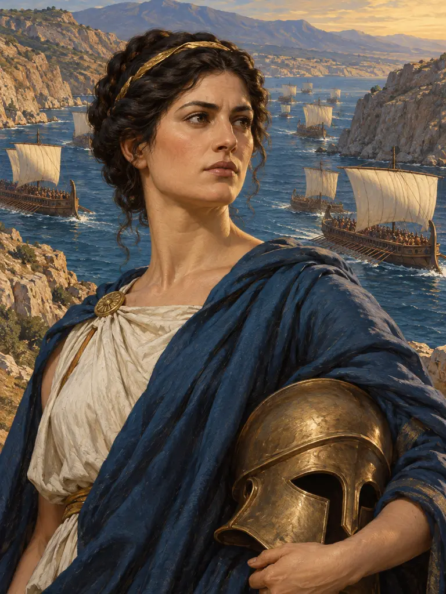
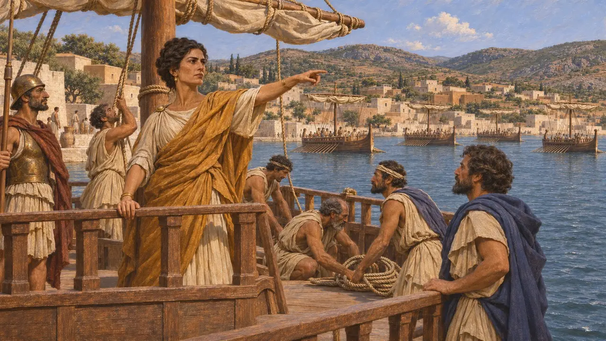
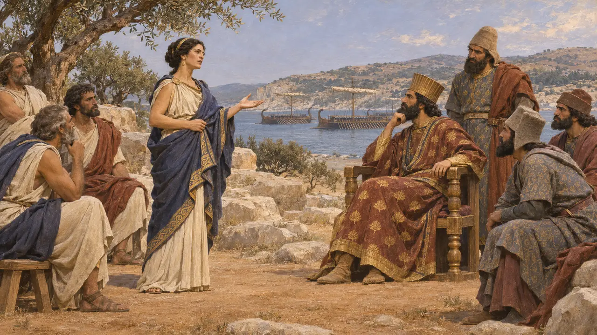
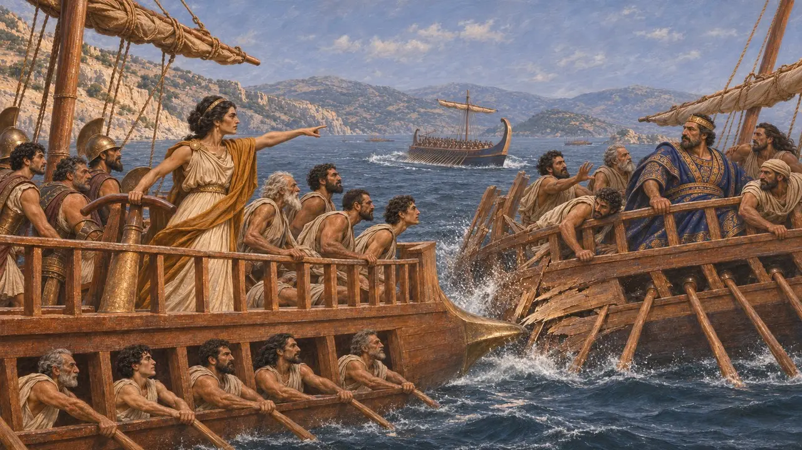
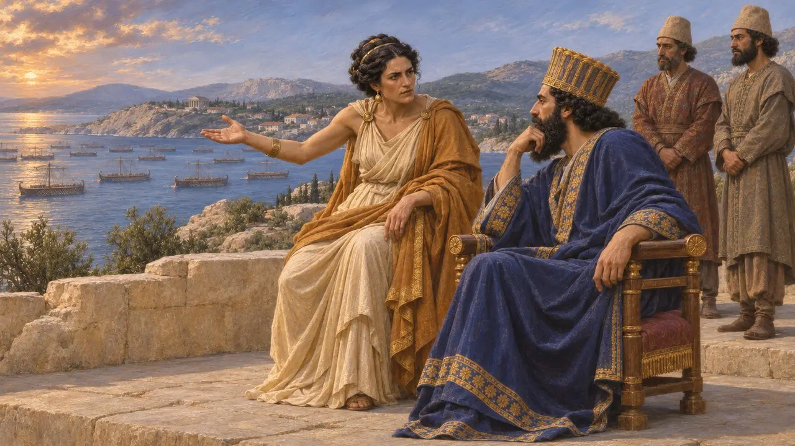
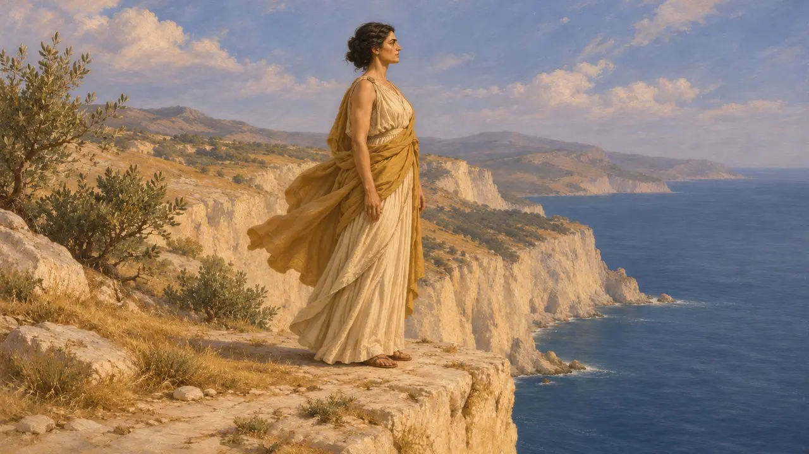

أرتميسيا الهاليكارناسية
حاكمة هاليكارناسوس وقائدة في أسطول خشايارشا، 480 ق.م
حكمت أرتميسيا مدينة هاليكارناسوس اليونانية الكارية تحت السيادة الفارسية، وقادت سفنها في غزو خشايارشا لبلاد اليونان عام 480 ق.م. ويكاد كل ما نعرفه عنها يأتي من هيرودوت، ابن مدينتها، الذي جعلها أدهى المستشارين في مجلس حرب الملك، وبطلة نجاة غريبة في سلاميس.
في اللعبة: تقدّم ملاحظة حولية اللعبة أرتميسيا كما يقدّمها هيرودوت: قائدة خمس سفن سنة 480 ق.م، وأفضل المستشارين في مجلس خشايارشا، والقائدة التي صدمت سفينة من صفّها في سلاميس. ولا يؤكد أي سجل فارسي هذه الروايات.

حاكمة لهاليكارناسوس
رواية قديمةيقول هيرودوت إن أرتميسيا كانت ابنة ليغداميس، هاليكارناسية من جهة أبيها وكريتية من جهة أمها. تولّت الحكم حين مات زوجها، ومع أن لها ابنًا بالغًا فقد أبحرت مع خشايارشا بمحض إرادتها. وقادت خمس سفن من هاليكارناسوس وكوس ونيسيروس وكاليدنا، يعدّها هيرودوت أفضل سفن الأسطول بعد سفن صيدا. وكانت هاليكارناسوس مدينة يونانية دورية فيها عدد كبير من الكاريين، وخضعت لفارس زمنًا طويلًا.
Herodotus 7.99

مشورة قبل سلاميس وبعدها
رواية قديمةيقول هيرودوت إن ماردونيوس استطلع قبل سلاميس آراء القادة في فاليرون بشأن خوض معركة بحرية. فكانت أرتميسيا وحدها من نصحت بخلاف ذلك: فاليونانيون أقوى في البحر، ولن يصمدوا طويلاً في سلاميس، وسيتفرقون إن زحف الجيش على البيلوبونيز. فأثنى عليها خشايارشا لكنه أخذ برأي الأغلبية. وبعد الهزيمة حثّته على العودة إلى بلاده وترك ماردونيوس في اليونان، فأرسل أبناءه إلى أفسس في رعايتها.
Herodotus 8.68-69, 8.101-103

الصدم في سلاميس
رواية قديمةيروي هيرودوت أن أرتميسيا، حين طاردتها سفينة أثينية أثناء المعركة، صدمت سفينة من صفّها هي، من كاليندا، وأغرقتها وعلى متنها ملكها داماسيثيموس. فظنّها المطارِد سفينة يونانية أو منشقة عن الفرس فانصرف عنها. أما خشايارشا، الذي كان يراقب من الشاطئ، فظنّ أنها أغرقت سفينة للعدو، وقال إن رجاله صاروا نساءً ونساءه صرن رجالًا. ويضيف أن الأثينيين رصدوا عشرة آلاف دراخما لمن يأسرها.
Herodotus 8.87-88, 8.93

إلى أي مدى نثق بهيرودوت
متنازع عليهكان هيرودوت من هاليكارناسوس. ويذكر معجم السودا البيزنطي أن حفيدها ليغداميس هو الطاغية الذي دفعه إلى المنفى، فلعلّه عرف ما تتناقله أسرتها من روايات. ويرى بعض المؤرخين فيها نمطًا أدبيًا، هو نمط الناصح الحكيم الذي يُعرض الملك عن مشورته، كما هو شأن كرويسوس أو أرتابانوس. ولم يستطع هيرودوت نفسه أن يجزم هل كان الصدم متعمَّدًا، ولا تذكرها أي وثيقة فارسية.
Herodotus 8.87; Suda, s.v. Herodotos; R. Munson, Artemisia in Herodotus, 1988

روايات لاحقة
أسطورة لاحقةجمع بولياينوس، الذي كتب في القرن الثاني الميلادي، حيلاً نُسبت إليها، كتبديل الرايات لتضليل مطارديها، ويذكر باوسانياس تمثالها بين التماثيل الفارسية في الرواق الفارسي بإسبرطة. وزعمت رواية خيالية لبطليموس هيفايستيون، معروفة عن طريق فوتيوس، أنها أحبّت رجلاً من أبيدوس وألقت بنفسها من جرف لوكاس فماتت. وهي ليست أرتميسيا الثانية، زوجة موسولوس، التي حكمت هاليكارناسوس بعد أكثر من قرن.
Polyaenus, Stratagems 8.53; Pausanias 3.11.3; Photius, Bibliotheca 190
المصادر
- Herodotus 7.99, 8.68-69, 8.87-88, 8.93, 8.101-103
- R. Munson, Artemisia in Herodotus, 1988
- P. Briant, From Cyrus to Alexander, 2002
- Polyaenus, Stratagems 8.53
- Pausanias 3.11.3
- Photius, Bibliotheca 190